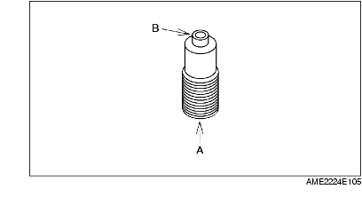

OIL JET VALVE INSPECTION
A6E242410730E02
1. Apply compressed air to oil jet valve A and verify that air passes through oil jet valve B.
• If not ventilation,replace the oil jet valve.
Air pressure:
216-274 kPa {2.2-2.7kgf·cm
2
31.4-39.7 psi}
